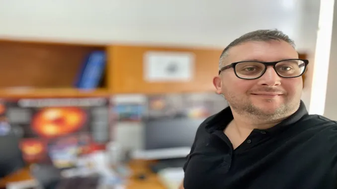

Türk Astrofizikçi Ali Övgün Dünyanın En Etkili Bilim İnsanları Arasında
“Dünyanın En Etkili Bilim İnsanları” Listesinde DAÜ’den 14 Akademisyen Yer Aldı. Doğu Akdeniz üniversitesinden 14 bilim insanı, Stanford Üniversitesince yapılan araştırma sonucunda “Dünyanın En Etkili Bilim İnsanları Listesi”nde yer aldı. Stanford Üniversitesi tarafından Elsevier veri tabanında yayınlanan ve 2021 alıntı yılına göre, ilk yüzde 2’lik dilimde bulunan “Dünyanın En Etkili Bilim İnsanları” listesi, “kariyer boyu etki” ve “yıllık etki” olarak iki kategoride hazırlandı.
Stanford Üniversitesi bilim insanlarından Prof. Dr. John P. A. Ioannidis ve araştırma ekibi tarafından, 22 anabilim dalı ile 176 alt bilim dalında dünyadaki bilim insanlarının yer aldığı listede “nitelikli yayın sayısı”, “yayınlara yapılan atıflar”, “h-indeksi”, “hm-indeksi” gibi göstergeler dikkate alındı. Listenin oluşturulmasına önde gelen akademik yayın firmalarından Elsevier B.V. ile 30 yılı aşkın bir süredir bilimsel üretim değerlendirme ve ölçümü haritaları üreten SciTech Strategies firması destek verdi. Listede 200 bin 409 bilim insanı, dünyada yüzde 2’lik dilim içerisinde sıralandı.
Ali Övgün Kimdir?
Ali Övgün 2010 yılında İzmir Yüksek Teknoloji Enstitüsü Fizik Bölümü’nden mezun oldu. SEPnet Bursları sayesinde 2011 yılında İngiltere’de Southampton Üniversitesi’nde astropartikül fiziği üzerine bir yıl eğitim gördü. Daha sonra Kuzey Kıbrıs’taki Doğu Akdeniz Üniversitesi’ne (DAÜ) geri dönerek ünlü fizikçilerden Prof. Yavuz Nutku ile Prof. John Wheeler’in öğrencisi kıbrıslıtürk kuramsal fizikçi Prof. Dr. Mustafa Halilsoy ile çalıştı ve 2013 yılında yüksek lisansını, 2016 yılında ise Fizik doktorasını uluslararası iyi dergilerde yayınlanmış 20 makale ile tamamladı. Dr. Övgün, Pontificia Universidad Católica de Valparaso (PUCV), Valparaiso, Şili’deki Instituto de Fisica’da üç yıl boyunca doktora sonrası araştırma yapmak için Şili devletinin prestijli FONDECYT Postdoctorado 2017 bursunu aldı.
Dr. Övgün, CERN TH Bölümü (2017), Waterloo Üniversitesi ve Çevre Enstitüsü Teorik Fizik (2018), California Eyalet Üniversitesi, Fresno (2018), Stanford Üniversitesi – Teorik Fizik Enstitüsü (2018) ve Sabancı Üniversitesi (2022)’ne ödenekli kısa araştırma ziyaretlerinde bulundu. Princeton’daki Institute for Advanced Study (IAS)’de (2018) From Qubits to Spacetime (PITP2018) katılımcısıydı.
Dr. Övgün’ün araştırması, kara deliklerle ilgili çeşitli gözlemlenebilirleri kullanarak değiştirilmiş kütleçekim teorilerini anlamaya ve sınırlamaya odaklanmıştır. Hawking radyasyonu, kütleçekimsel mercekleme ve kara deliklerin gölgesini hesaplamak için şu anda en yaygın kullanılanlar arasında yer alan çeşitli analiz yöntemlerine katkıda bulunmuştur. Kara delikler dışında, solucan delikleri, kompakt yıldızlar, Hawking radyasyonu ve kozmolojik şişme ile ilgili olarak genel göreliliğin çeşitli yönleri üzerinde çalışıyor.
Dr. Övgün, Stanford Üniversitesi 2022 Yayınları Listesi’nde Dünyanın En İyi %2 Bilim İnsanı arasında yer alıyor. Ali Övgün teorik fizikçidir ve genel görelilik, kozmoloji ve astropartikül fiziği üzerine çalışmaktadır. Bu, kuarklardan evrene fiziğin birçok farklı alanına değinen geniş bir konudur. Bize fiziğin temelleri hakkında bilgi veren sorularla ilgileniyor. Kara delikler ve kuantum bilgisi arasındaki derin bağlantıyı anlamak için bu ilişkiyi daha da inceliyor.
ıllar boyunca, kara delikler, solucan delikleri, kompakt yıldızlar, yarı normal modlar, kara deliğin termodinamiği, Hawking radyasyonu, kozmoloji, şişme, yerçekimi merceklenmesi, karmaşıklık, değiştirilmiş yerçekimi teorileri, AdS/CFT, ve holografi. Dr. Övgün Fizikte bir dizi ilginç soruyu ele almaya çalışıyor, örneğin: -Zamanın başlangıcında Big Bang’in yerini bir solucan deliği ile değiştirmesi mümkün mü? -Geçilebilir bir solucan deliği oluşturmak mümkün mü? -Kara delik/solucan deliği termodinamiğine kuantum etkileri nasıl dahil edilebilir? -Bir Kara Deliğin kenarında veya bir Kara deliğin içinde ne olur? -Evrenimiz Bir Hologram Olabilir mi? veya Holografik Evrende Kaç Boyut var? -Evren neden hızlanan bir hızla genişliyor? -Beyin Hücreleri Nasıl Küçük Evrenler Gibi? Ve diğerleri…
Prof. Dr. Karatepe Türkiye’nin En Etkin 11. Bilim İnsanı
Yayınlanan rapora göre dünya genelinde en yüksek etki yaratan bilim insanlarından oluşan listede, DAÜ Turizm Fakültesi Öğretim Üyesi Prof. Dr. Osman M. Karatepe 2,872’nci sırada yer aldı ve Türkiye’nin en etkin 11. bilim insanı oldu. İşletme ve Ekonomi Fakültesi, Bankacılık ve Finans Bölümü Öğretim Üyesi Prof. Dr. Salih Katırcıoğlu Türkiye’nin en etkin 49. bilim insanı olurken; Mühendislik Fakültesi, Makine Mühendisliği Bölümü Öğretim Üyesi Yrd. Doç. Dr. Babak Safei ilk 100, İşletme ve Ekonomi Fakültesi, Ekonomi Bölümü Başkanı Prof. Dr. Mehmet Balcılar, Mühendislik Fakültesi, Bilgisayar Mühendisliği Bölümü Öğretim Üyesi Prof. Dr. Hasan Kömürcügil, Fen ve Edebiyat Fakültesi, Matematik Bölümü Başkanı Prof. Dr.Nazım Mahmudov, Kimya Bölümü Öğretim Üyesi Doç. Dr. Akeem Adeyemi Oladipo ile Fizik Bölümü Öğretim Üyesi Doç. Dr. Ali Övgün ilk 250’ye girme başarısını gösterdiler.
Mühendislik Fakültesi, Elektrik ve Elektronik Mühendisliği Bölümü Öğretim Üyesi ve Akademik İşlerden Sorumlu Rektör Yardımcısı Prof. Dr. Hasan Demirel, Fen ve Edebiyat Fakültesi, Fizik Bölümü Başkan Yardımcısı Prof. Dr. Seyedhabibollah Mazharimousavi, Mühendislik Fakültesi, Elektrik ve Elektronik Mühendisliği Bölümü Öğretim Üyesi Prof. Dr. Osman Kükrer, Eczacılık Fakültesi Dekanı Prof. Dr. Müberra Koşar, Fen ve Edebiyat Fakültesi, Matematik Bölümü Öğretim Üyesi Benedek Norbert Nagy de Türkiye’den listeye alınan 1,211 akademisyen arasına girme başarısını göstererek dünyada %2’lik dilim içerisinde yer aldılar.